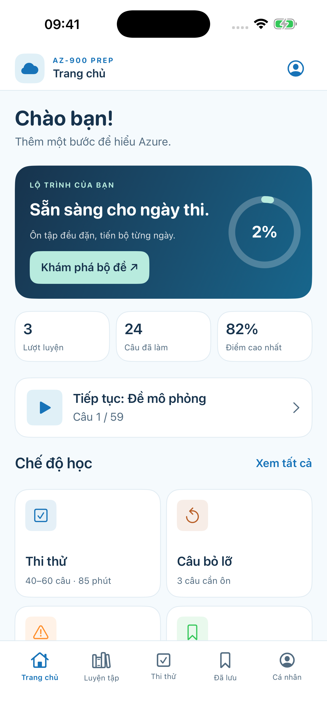
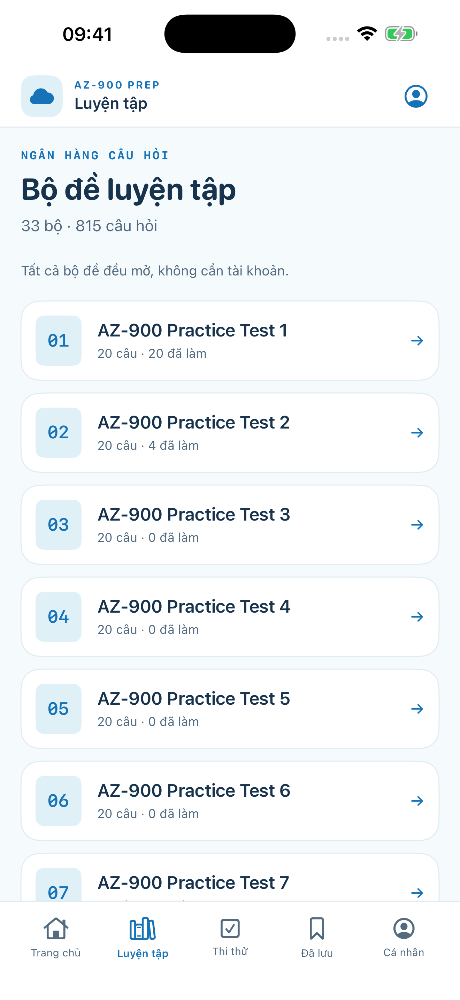
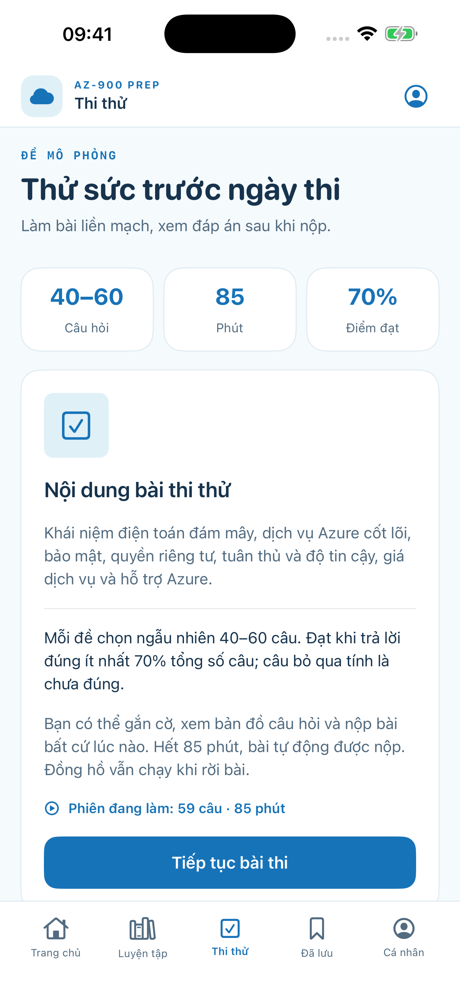

33 bộ · 815 câu33 sets · 815 questions
Nội dung Azure Fundamentals bằng tiếng Anh, giao diện học tập tiếng Việt.English-language Azure Fundamentals questions, Vietnamese study interface.
Azure Fundamentals · AZ-900
Luyện 815 câu hỏi trong 33 bộ đề. Thi thử có tính giờ, xem giải thích, ôn câu sai — kể cả khi không có mạng.Practice 815 questions across 33 sets. Take timed mocks, study explanations, review mistakes — even offline.

Học theo cách của bạnStudy your way
Tất cả câu hỏi mở sẵn. Không cần tài khoản hoặc mua thêm để bắt đầu.Every question is unlocked. No account or extra purchase needed.
Nội dung Azure Fundamentals bằng tiếng Anh, giao diện học tập tiếng Việt.English-language Azure Fundamentals questions, Vietnamese study interface.
Đề ngẫu nhiên 40–60 câu, đồng hồ đếm ngược và kết quả chi tiết.Randomized 40–60 question practice exams, countdown, detailed results.
Flash Challenge, Time Trial, câu sai, câu bỏ lỡ và dấu trang.Flash Challenge, Time Trial, wrong answers, missed items and bookmarks.
Giao diện thực tếInside the app


Không có quảng cáo, tài khoản, theo dõi hoặc đồng bộ dữ liệu. Câu hỏi và hình minh họa được đóng gói trong ứng dụng.No ads, accounts, tracking or sync. Questions and illustrations ship inside the app.
Cần trợ giúp?Need help?